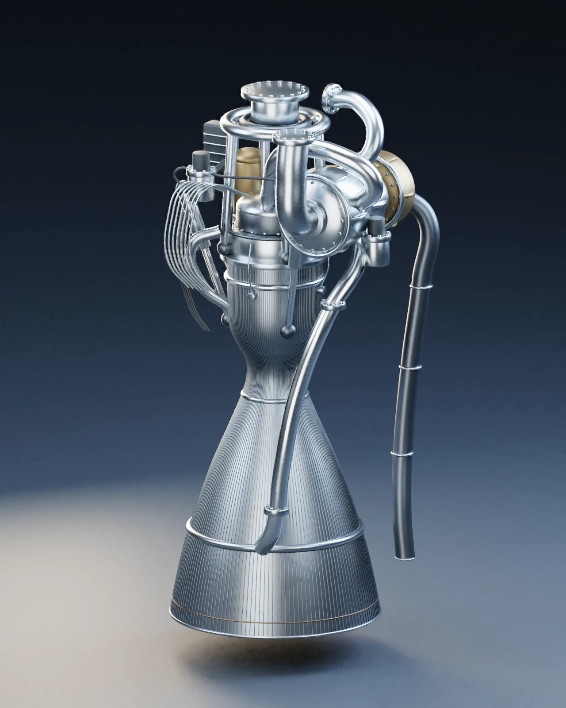
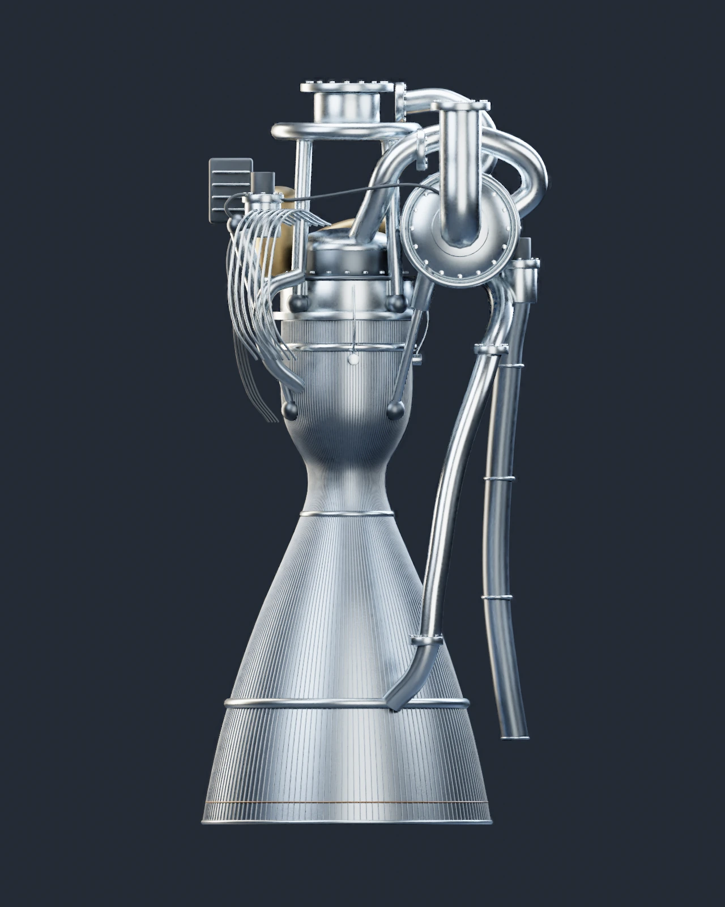
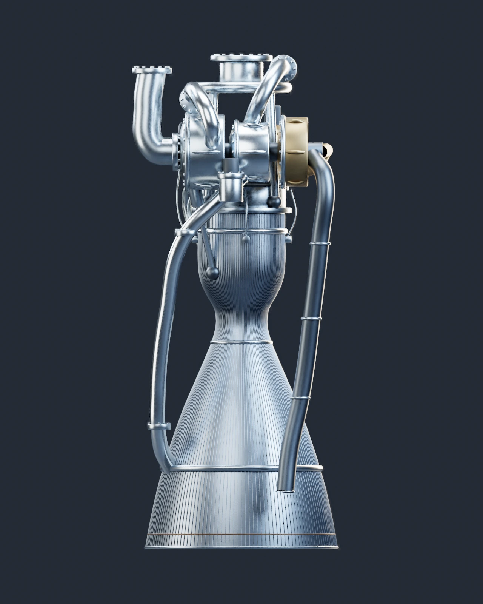
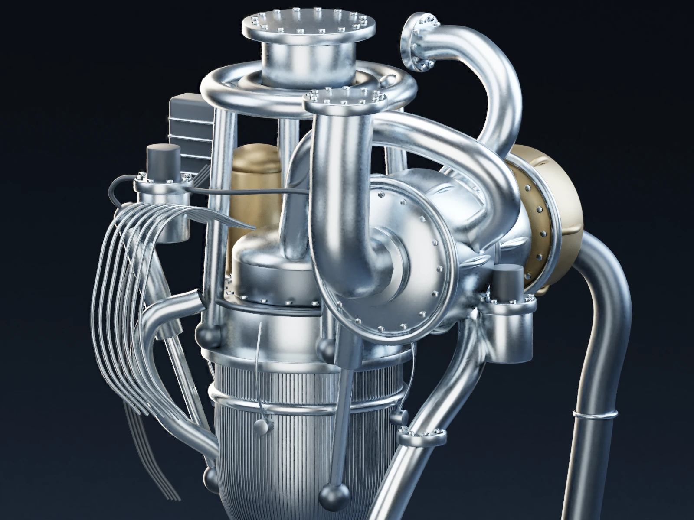

Dimostrato
Propulsione dei Falcon e molteplici cicli di volo dei primi stadi.
Motori · Scheda tecnica 04
La famiglia di motori a ossigeno liquido e kerosene dei Falcon. La versione atmosferica e quella per il vuoto condividono principi, ma hanno ugelli e impieghi differenti.
Stato al 10 ottobre 2026: Operativo
Leggi i dati Esplora le vedute Controlla le fonti
Riferimento: documenti citati a fondo pagina, letti con le rispettive date. Stato editoriale al 10 ottobre 2026. Il documento presenta totali di spinta non uniformi: qui è riportato il valore del singolo motore nel testo, senza ricostruire un totale.
Il motore visto da vicino · 25 ottobre 2026
Il Merlin 1D del primo stadio riunisce la camera di combustione, l’ugello e il gruppo che alimenta il motore. Queste quattro ricostruzioni mostrano come leggere il loro insieme: dalla forma esterna della campana ai corpi della turbopompa. Le vedute frontale e laterale sono ortografiche, così il cambiamento di punto di vista rende più chiari gli ingombri senza introdurre la convergenza della prospettiva.

Veduta 01 · Ricostruzione 3D
Il corpo centrale guida la lettura del motore: in alto si trova la camera, poi la sezione si restringe nella gola e si allarga nell’ugello. La campana permette ai gas della combustione principale di espandersi e accelerare. Nel Merlin 1D la camera e l’ugello sono raffreddati dal combustibile che scorre nella loro parete prima di raggiungere l’iniettore.
Da osservare. Segui dall’alto verso il basso la camera, il restringimento della gola e la campana. Il tubo scuro sul fianco rappresenta un percorso distinto dallo scarico principale.
Apri l’immagine a piena dimensione
Veduta 02 · Ricostruzione 3D
La vista frontale evidenzia il profilo della camera e dell’ugello. La quasi simmetria della campana contrasta con la disposizione asimmetrica degli organi esterni: pompe, condotti e attuatori occupano il volume intorno alla testa del motore. Non tutto ciò che appare davanti alla camera è parte del suo involucro; molte linee appartengono all’alimentazione o ai circuiti ausiliari.
Da osservare. Confronta il centro della campana con gli elementi spostati su un lato della testa. Questa vista aiuta a distinguere il corpo principale dagli impianti che lo circondano.
Apri l’immagine a piena dimensione
Veduta 03 · Ricostruzione 3D
Dal fianco diventano più leggibili la profondità del gruppo superiore e il condotto esterno che scende accanto all’ugello. Nel ciclo a generatore di gas, una parte dei propellenti produce il gas che aziona la turbina. Dopo aver ceduto energia, questo gas viene scaricato fuori dalla camera principale: il suo percorso va distinto da quello dei gas che attraversano la campana.
Da osservare. Individua il tubo esterno che termina a fianco della campana. La posizione e le curve mostrate sono illustrative; è documentata la separazione funzionale dei due scarichi.
Apri l’immagine a piena dimensione
Veduta 04 · Ricostruzione 3D
La guida SpaceX descrive una turbopompa con un unico albero che collega la pompa dell’ossigeno liquido, la pompa del combustibile e la turbina. Il dettaglio ne suggerisce l’ingombro attraverso gli involucri esterni e i raccordi. L’energia meccanica della turbina permette alle pompe di portare i propellenti alle pressioni necessarie per alimentare il motore.
Da osservare. Le forme circolari e le flange rappresentano involucri esterni. L’albero comune è una caratteristica documentata, ma in questa immagine non è esposto: per seguirne il funzionamento usa lo schema del ciclo qui sotto.
Apri l’immagine a piena dimensione
Una piccola parte dei propellenti alimenta il generatore di gas. I gas prodotti azionano una turbina, collegata sullo stesso albero alla pompa dell’ossigeno e alla pompa del cherosene. Il ramo principale dell’RP-1 sottrae calore alle pareti della camera e dell’ugello prima di alimentare la combustione. Lo scarico della turbina non ritorna nella camera principale: è questa la differenza essenziale rispetto alla combustione stadiata. La tavola mostra il principio, non la disposizione interna del motore né la sequenza di avviamento.
Le prime versioni volarono su Falcon 1. Merlin 1D accompagnò l’aumento della scala produttiva e il riuso. Merlin Vacuum ha un ugello adatto alla bassa pressione esterna.
La spinta dipende dalla pressione ambiente e dal regime del motore. La durata utile non si ricava dal numero di voli di un booster senza conoscere ispezioni e sostituzioni dei suoi componenti.
Propulsione dei Falcon e molteplici cicli di volo dei primi stadi.
Qualifica e accettazione dei motori secondo le procedure del programma.
Vita residua e costo del singolo motore non sono ricostruibili dal solo registro lanci.

Consultazione editoriale: 10 ottobre 2026. Le date dei singoli documenti sono distinte dalla data della scheda.
.jpg){kind=link}